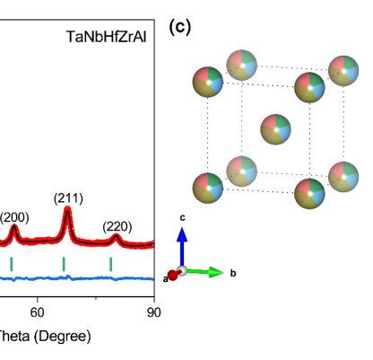

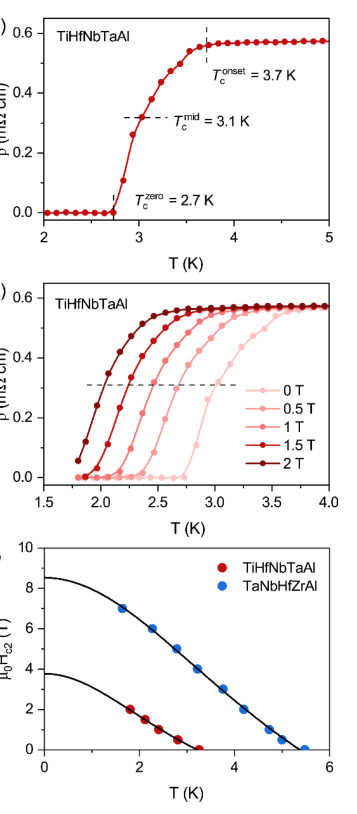
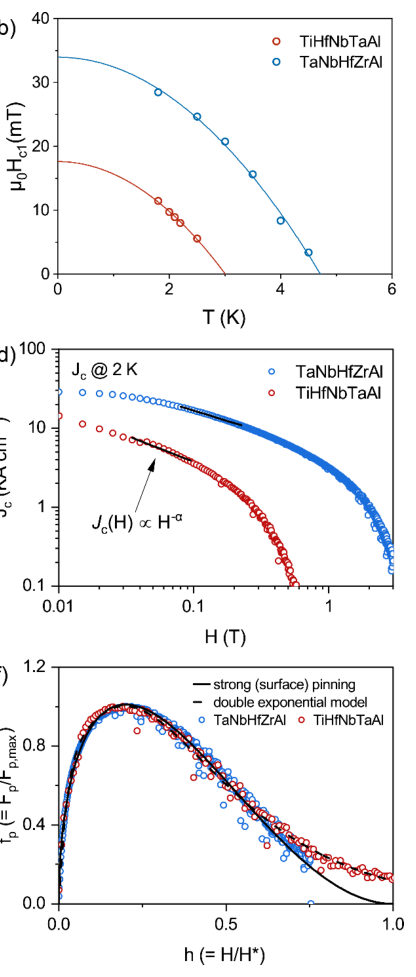
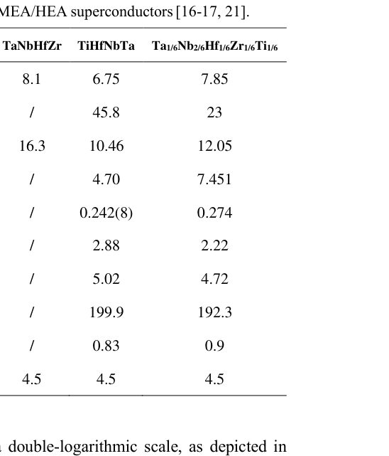
Authors: Eugene B. Kolomeisky
Type: theory · Category: other · PDF: https://arxiv.org/pdf/2605.25938v1
Analysis basis: full PDF text, analyzed in chunks
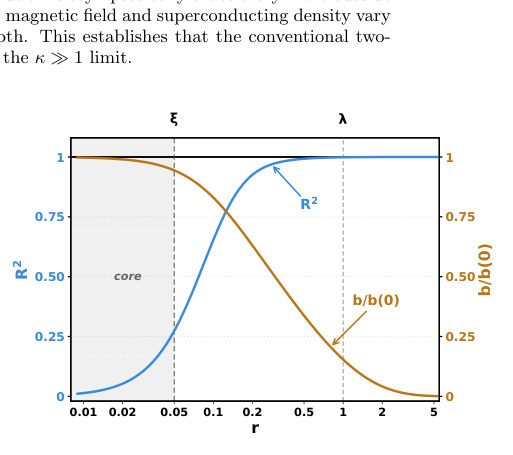
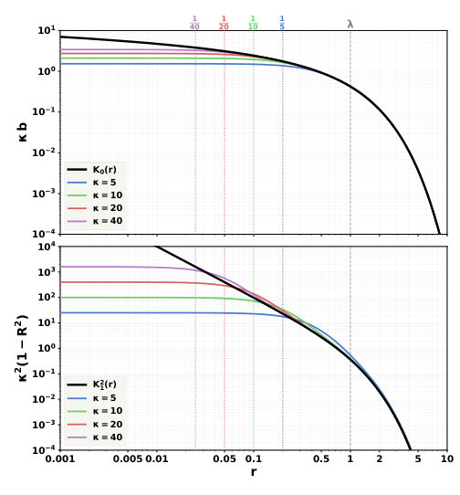
Summary. This paper proves that in the limit of extremely high Ginzburg-Landau parameters, the Abrikosov vortex loses its two-scale structure (coherence length and penetration depth) and instead follows a single-scale pattern. By showing that the superconducting density is tied to the velocity field, the author provides an exact analytical solution for the vortex exterior. This challenges the standard assumption of two distinct length scales in extreme type-II superconductors.
Why it may be interesting. not directly relevant
Main problem. The paper investigates the structure of the Abrikosov vortex in the extreme type-II limit (where the Ginzburg-Landau parameter kappa approaches infinity) to determine if the conventional two-length-scale picture holds.
Main result. The study demonstrates that in the extreme type-II limit, the vortex outer structure is governed by a single length scale (the London penetration depth), as the superconducting density becomes algebraically slaved to the velocity field.
Method. The author uses analytical derivation within the Ginzburg-Landau framework, employing an amplitude-phase representation and solving nonlinear differential equations using modified Bessel functions, supplemented by numerical verification.
Model / system. The system is an Abrikosov vortex in a type-II superconductor described by the Ginzburg-Landau theory, which is mathematically equivalent to the static limit of the Abelian Higgs model.
Key observables. Superfluid velocity field, magnetic induction, superconducting density, and vortex line energy.
Important parameters / regimes. Ginzburg-Landau parameter kappa (specifically the limit kappa to infinity), coherence length, and London penetration depth.
Assumptions / limitations. The solution is valid for the outer region of the vortex (r > 1/kappa) and assumes the extreme type-II limit where the vortex core shrinks to a point.
Figures summary. Figure 2 compares numerical Ginzburg-Landau solutions for various kappa values against the exact analytical Bessel-function profiles for magnetic induction and density deficit, showing uniform convergence.
Paper structure. The paper introduces the problem of the extreme type-II limit, defines the Ginzburg-Landau model and the mathematical framework, derives the exact outer solution via a slaving condition, compares the results to the London model and numerical simulations, and discusses the implications of the single-scale structure.
We determine the exact outer structure of the Abrikosov vortex in the extreme type-II limit, which occurs when the Ginzburg-Landau parameter $κ$ diverges. In this limit, Ginzburg-Landau theory simplifies, outside a shrinking core, to a closed nonlinear theory for the superfluid velocity subject to an algebraic density constraint. The resulting solution is asymptotically exact everywhere outside the vanishing vortex core, demonstrating that both magnetic field and superconducting density vary on the length scale of the London penetration depth. This establishes that the conventional two-length-scale picture of the vortex does not hold in the $κ\gg 1$ limit.
Authors: Madiha Zia, Muzamil Shah, Kashif Sabeeh, Gao Xianlong, Reza Asgari
Type: theory · Category: other · PDF: https://arxiv.org/pdf/2605.25121v1
Analysis basis: full PDF text, analyzed in chunks
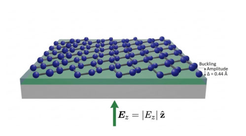
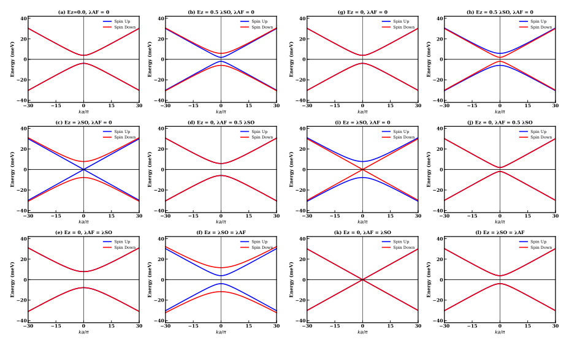
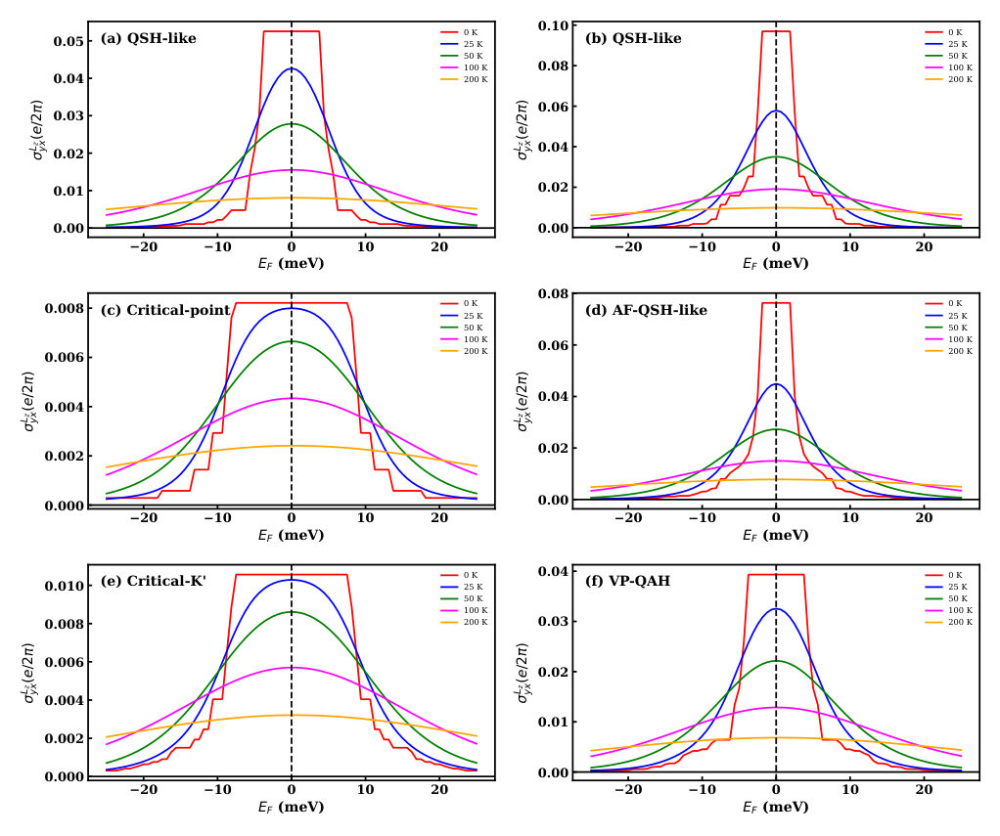
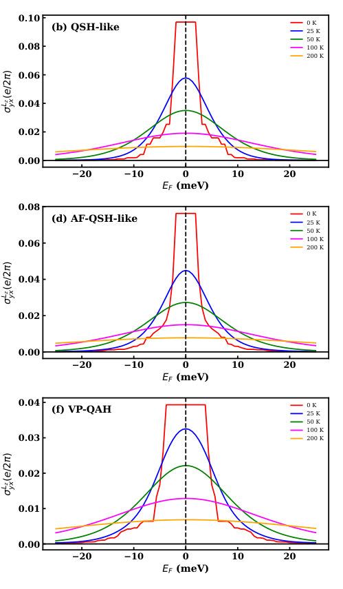
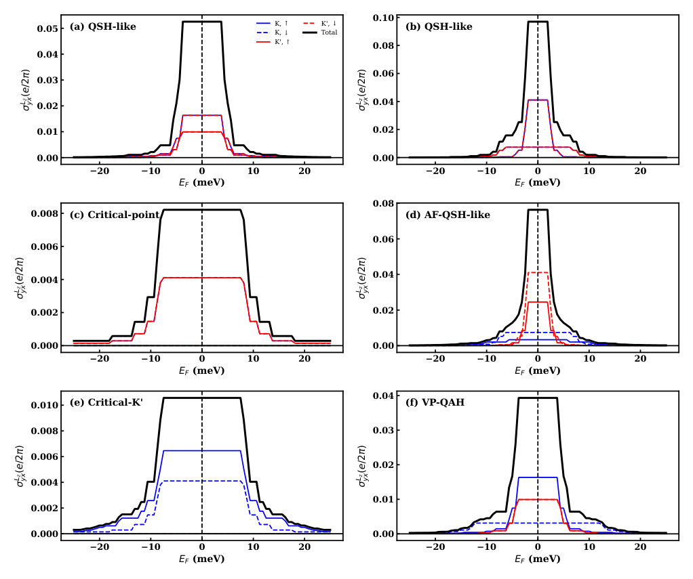
Summary. This paper demonstrates how the Orbital Hall Effect in buckled 2D Dirac materials can be precisely controlled by tuning external electric and magnetic fields. It shows that topological phase transitions, such as the transition between Quantum Spin Hall and Quantum Anomalous Hall phases, lead to significant enhancements in orbital Hall conductivity. These findings suggest that such materials are highly promising platforms for developing tunable orbitronic devices.
Why it may be interesting. not directly relevant
Main problem. Investigating the intrinsic topological control of the Orbital Hall Effect (OHE) in buckled 2D Dirac materials using external electric and magnetic fields.
Main result. The orbital Hall conductivity is significantly boosted near band-inversion points and can be tuned across various topological regimes (QSH, QVH, QAH) by adjusting external fields.
Method. Berry-curvature-based linear response theory using a low-energy massive Dirac Hamiltonian and Kubo formula calculations.
Model / system. Buckled two-dimensional Dirac materials (such as the silicene family) modeled by a low-energy massive Dirac Hamiltonian including intrinsic spin-orbit coupling, a perpendicular electric field, and an antiferromagnetic exchange field.
Key observables. Orbital Hall conductivity, Berry curvature, orbital magnetic moment, and orbital angular momentum.
Important parameters / regimes. Intrinsic spin-orbit coupling (lambda_SO), perpendicular electric field (Ez), and antiferromagnetic exchange field (lambda_AF).
Assumptions / limitations. The system is in the intrinsic (disorder-free) limit, electrons are treated as independent (neglecting electron-electron interactions), and Rashba spin-orbit coupling is neglected.
Figures summary. Figure 1 shows a schematic of silicene; Figure 2 illustrates band structures for different topological regimes; Figure 3 shows OHC as a function of Fermi energy and temperature; Figure 5 shows OHC vs. tuning parameters; Figure 6 is a phase diagram heatmap; Figure 7 and 8 show the momentum dependence of Berry curvature and orbital magnetic moment.
Paper structure. The paper introduces the physical system and model, develops the theoretical framework for orbital transport, analyzes the redistribution of Berry curvature across different topological phases, examines the impact of temperature, and concludes with a phase diagram of the orbital response.
We study the orbital Hall response in buckled two-dimensional Dirac materials using a unified framework that includes an antiferromagnetic exchange field, a perpendicular electric field, and intrinsic spin-orbit coupling. We show that the orbital Hall conductivity is considerably boosted around band-inversion points and shows different signatures across multiple electronic phases using a low-energy massive Dirac model in conjunction with Berry-curvature-based linear response theory. We find a series of quantum spin Hall, valley Hall, and anomalous Hall regimes by methodically adjusting external fields, and demonstrate how the evolution of the orbital response is controlled by the redistribution of Berry curvature between spin and valley sectors. We examine the impacts of finite temperature in more detail and find that although the response s size is suppressed by thermal broadening, the distinctive phase-dependent features remain robust. Our findings demonstrate that orbital Hall conductivity offers a sensitive band topology probe in Dirac systems and emphasize buckled two-dimensional materials as a flexible platform for engineering tunable orbital currents for orbitronic applications.
Authors: Xin Hu, Mamoru Matsuo
Type: both · Category: other · PDF: https://arxiv.org/pdf/2605.25387v1
Analysis basis: full PDF text, analyzed in chunks
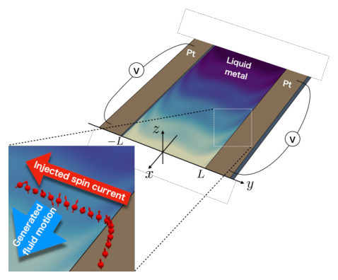
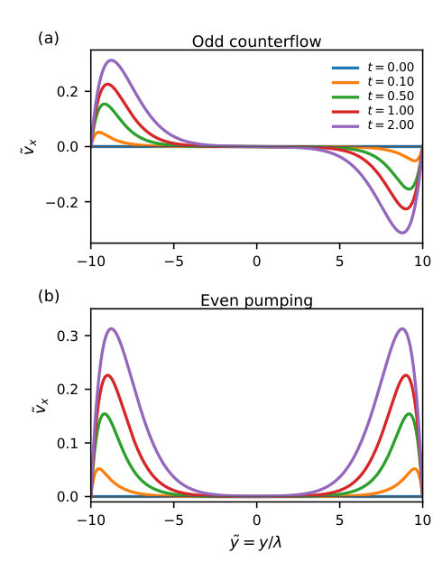
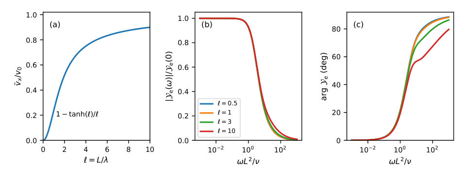
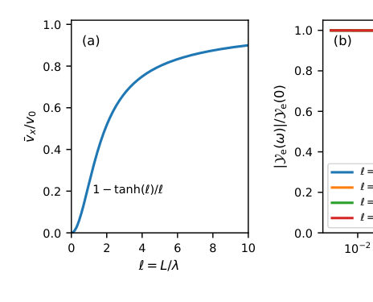
Summary. This paper proposes a way to move liquid metal in sealed microchannels using spin torque from the Einstein-de Haas effect. It shows that the flow can be controlled by tuning spin-current symmetry and provides a method to use frequency sweeps to measure fluid and spin properties.
Why it may be interesting. not directly relevant
Main problem. Developing a method for microfluidic actuation in sealed liquid metals using the Einstein-de Haas effect and characterizing the resulting spin-mechanical response.
Main result. The authors establish a universal scaling law for DC velocity profiles based on the ratio of channel width to spin-diffusion length and demonstrate that the system acts as a frequency-dependent low-pass filter.
Method. The study uses analytical derivations of micropolar hydrodynamic equations and frequency-domain analysis (admittance spectroscopy) to model both steady-state and AC responses.
Model / system. A Pt/liquid-metal/Pt geometry where spin current injected via the Spin Hall Effect transfers angular momentum to a confined, incompressible, micropolar liquid metal.
Key observables. DC velocity profiles, net mass flux, orbital angular momentum, and AC spin-mechanical admittance (magnitude and phase).
Important parameters / regimes. Spin-diffusion length (lambda), channel width (L), kinematic viscosity (nu), and the dimensionless ratio L/lambda.
Assumptions / limitations. Low-Reynolds-number, low-frequency, and incompressible flow; assumes an isotropic liquid and neglects micro-inertia and convective terms in the steady-state limit.
Figures summary. Figure 1 shows the device schematic; Figure 2 illustrates the time evolution of velocity profiles for odd and even modes; Figure 3 presents universal scaling of DC response and the frequency-dependent AC admittance and phase.
Paper structure. The paper introduces the EdH-driven microfluidic concept, develops the micropolar hydrodynamic model, derives steady-state scaling laws and symmetry-resolved modes, extends the theory to AC admittance spectroscopy, and discusses parameter extraction.
We propose spin-current microfluidic actuation of a sealed liquid metal. Spin angular momentum injected from Pt contacts enters the liquid as an Einstein-de Haas torque and is converted through micropolar angular-momentum balance into viscous flow without pressure drive, moving walls, magnetic fields, Lorentz forces, or charge flow through the liquid. The dc velocity obeys universal spin-diffusion scaling, and the finite-frequency spin-mechanical admittance resolves viscous momentum diffusion, spin transport, microrotation relaxation, and interface transparency of the liquid-metal channel.
Authors: Himanshu Sheokand, Arun K Kumay, Mazharul Islam Mondal, Milo Sprague, Ravinder Sharma, Jayan Thomas, Dariusz Kaczorowski, Andrzej Ptok, Madhab Neupane
Type: both · Category: other · PDF: https://arxiv.org/pdf/2605.26075v1
Analysis basis: full PDF text, analyzed in chunks
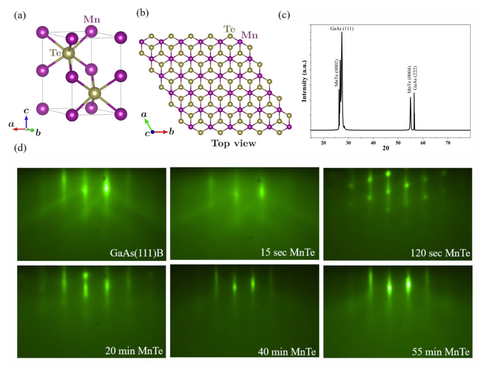
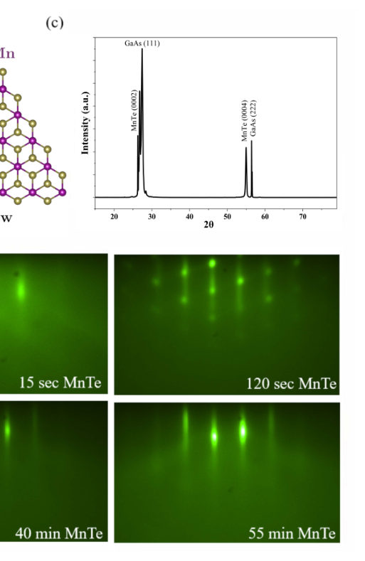
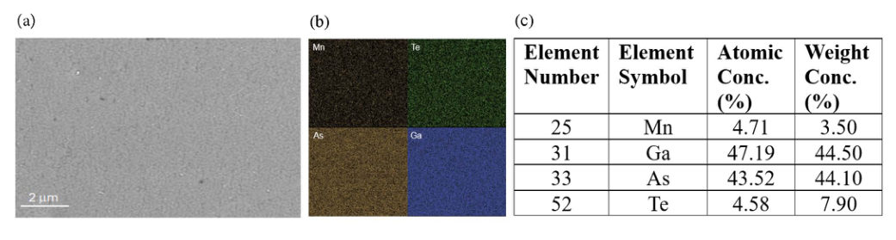
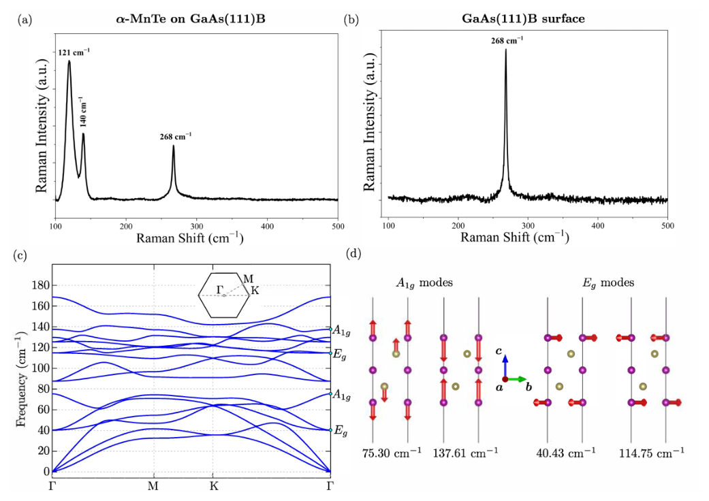
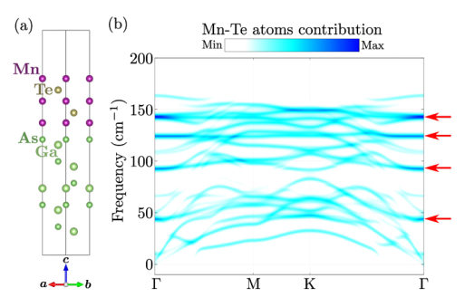
Summary. The researchers successfully grew high-quality alpha-MnTe thin films using molecular beam epitaxy on GaAs substrates. By using Raman spectroscopy and first-principles calculations, they identified the key optical phonon modes, establishing these films as a reliable platform for studying altermagnetism and lattice-coupled excitations.
Why it may be interesting. not directly relevant
Main problem. The challenge of achieving controlled epitaxial growth of altermagnetic MnTe thin films on technologically relevant substrates and characterizing their vibrational properties.
Main result. Successful MBE growth of high-quality, stoichiometric alpha-MnTe thin films on GaAs(111)B was achieved, with Raman spectroscopy resolving all symmetry-allowed Raman-active phonon modes.
Method. Molecular Beam Epitaxy (MBE) for growth, combined with RHEED, XRD, SEM, and EDX for structural characterization, and Raman spectroscopy paired with first-principles phonon calculations for vibrational analysis.
Model / system. Epitaxial alpha-MnTe thin films with a hexagonal NiAs-type structure grown on GaAs(111)B substrates.
Key observables. Raman-active phonon modes (121 and 140 cm-1), Mn:Te stoichiometry, and crystal orientation/structural integrity.
Important parameters / regimes. Substrate temperature of 425 degrees C, Te-rich flux ratio of approximately 1:6, and film thickness of approximately 40 nm.
Assumptions / limitations. The monolayer calculation assumes a stable 5-atom unit cell; interface calculations assume a specific 15-atom primitive cell model.
Figures summary. Fig 1 shows the MnTe crystal structure, XRD patterns, and RHEED evolution; Fig 2 presents SEM images and EDX elemental maps; Fig 3 displays Raman spectra for films and substrates and theoretical phonon dispersion/displacements; Fig 4 shows the interface model and projected phonon dispersion.
Paper structure. The paper introduces the importance of altermagnetic MnTe, details the MBE growth process and structural characterization, presents Raman spectroscopy results and identifies phonon modes via first-principles calculations, and concludes with the implications for altermagnetism research.
The altermagnetic materials have emerged as model systems for studying spin split electronic structures, yet controlled epitaxial growth on technologically relevant substrates remains challenging. Among the known candidates, MnTe stands out as a prominent altermagnetic material owing to its layered structure and high Neel temperature. Here, we report the molecular beam epitaxy (MBE) growth of high quality alpha MnTe thin films on GaAs(111)B substrates and provide a comprehensive analysis of the growth evolution and structural properties. Raman spectroscopy reveals multiple vibrational features of alpha MnTe including modes near 121, and 140 1/cm. Combined with first principles phonon calculations, these features are identified as the Raman-active phonons of the hexagonal NiAs type lattice. Our results show that the high crystalline quality of MBE grown alpha MnTe enables the complete experimental resolution of all symmetry allowed Raman active phonon modes, highlighting epitaxial alpha MnTe as a robust thin film platform for investigating altermagnetism and its lattice coupled excitations.
Authors: Na Jiao, Shu-Xiang Qiao, Pan Zhou, Hong-Yan Lu, Ping Zhang
Type: theory · Category: strongly correlated electrons · PDF: https://arxiv.org/pdf/2605.24822v1
Analysis basis: full PDF text, analyzed in chunks
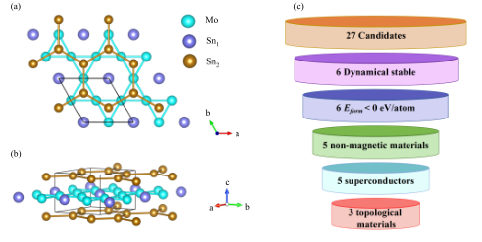
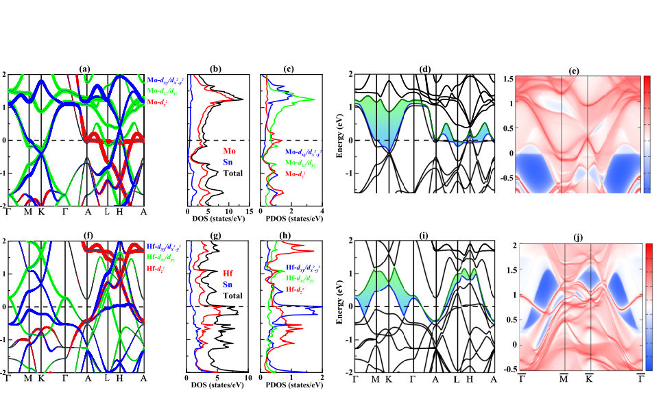
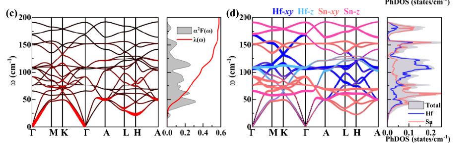
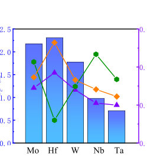
Summary. The paper theoretically predicts a new family of 1:1 kagome metals that integrate superconductivity and topological order without external doping. By identifying specific stable candidates like MoSn, HfSn, and NbSn, it provides a roadmap for discovering new superconducting topological metals.
Why it may be interesting. not directly relevant
Main problem. The lack of 1:1 type kagome materials that exhibit the intrinsic coexistence of superconductivity and nontrivial band topology, as existing candidates like FeSn and CoSn are often suppressed by magnetism.
Main result. The identification of a new class of 1:1 kagome metals (MSn, where M = Mo, Hf, Nb, Ta, W, Ti) that are stable and include superconducting topological metals (MoSn, HfSn, and NbSn) with nontrivial Z2 topology.
Method. First-principles calculations using Density Functional Theory (DFT) with VASP and Quantum Espresso, including phonon spectra for stability, Wannier90/WannierTools for topological surface states, and the McMillan/Allen-Dynes formula for superconductivity.
Model / system. A 1:1 kagome lattice of transition metal (M) and Sn atoms in the P6/mmm space group, specifically focusing on candidates like MoSn, HfSn, and NbSn.
Key observables. Superconducting transition temperature (Tc), electron-phonon coupling constant (lambda), Z2 topological invariant, Dirac points, and van Hove singularities.
Important parameters / regimes. Predicted Tc range of 0.71 K to 2.31 K; EPC constants (lambda) of 0.49 for MoSn and 0.57 for HfSn; Z2 = 1 for specific candidates.
Assumptions / limitations. The superconductivity is assumed to be conventional and phonon-mediated; the stability is assessed via DFT-based phonon and formation energy calculations.
Figures summary. Figure 1 shows the crystal structure and the screening flowchart for stable candidates; Figure 2 displays electronic structures, band topology, and orbital-projected DOS for MoSn and HfSn; Figure 3 shows phonon dispersion and the Eliashberg spectral function.
Paper structure. The paper begins with a screening of 27 candidates for stability, followed by an analysis of the electronic and topological properties of the stable non-magnetic candidates, and concludes with an investigation of the superconducting mechanism and phonon contributions.
Kagome superconductors featuring topologically nontrivial band structures have attracted extensive research interest. FeSn and CoSn is a new kind of kagome material with intrinsic magnetism, which suppresses the emergence of superconductivity. Here, we theoretically predict a new kind of 1:1 kagome MSn (M=transition metal), which exhibit intrinsic superconductivity and nontrivial band topology by first-principles calculations. Among twenty-seven candidates, MSn (M= Mo, Hf, Nb, Ta, W, Ti) are theoretically identified as both dynamically and thermodynamical stable. And, five non-magnetic MSn (M= Mo, Hf, Nb, Ta, W) exhibit phonon-mediated superconductivity. Especially, the d orbitals bands display Dirac points and van Hove singularities near the Fermi level, which contribute to the emergence of topology and the electron-phonon coupling (EPC). More interestingly, MoSn, HfSn and NbSn show nontrivial topological band structure at the Fermi level. Thus, the predicted MSn establish a platform integrating superconductivity and topological order.
Authors: Ao Zhang, Ran Wang, Mohammed O. Bazaid, Shiyi Wang, Ting-Jung Hsiao, Yibo Wang, Antonio Sorrentino, Yang Liu, Yu-Han Joseph Tsai, Boxuan Zhou, Bosi Peng, Zeyan Liu, Xiangfeng Duan, Adam Z. Weber, William A. Goddard, Seung Soon Jang, Yu Huang
Type: both · Category: other · PDF: https://arxiv.org/pdf/2605.24757v1
Analysis basis: full PDF text, analyzed in chunks
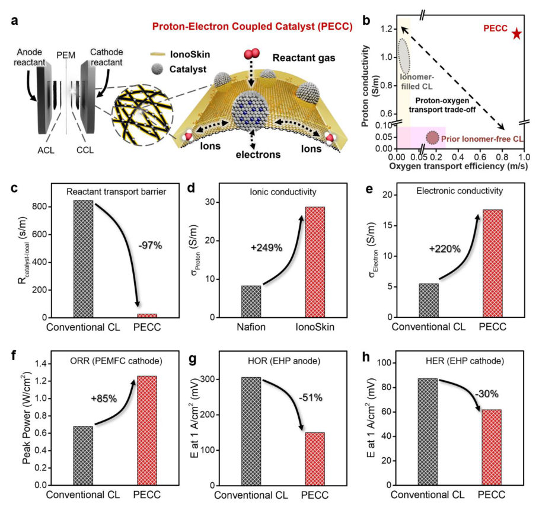
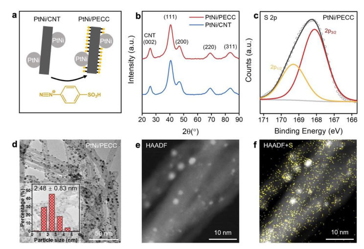
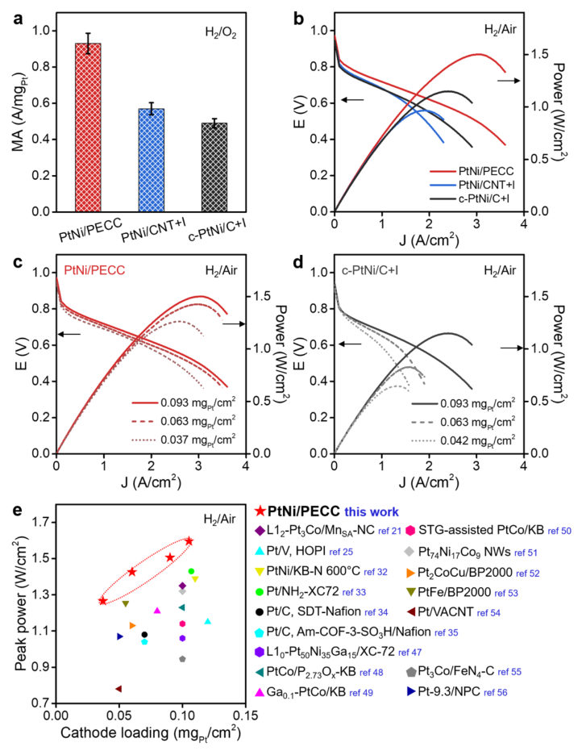
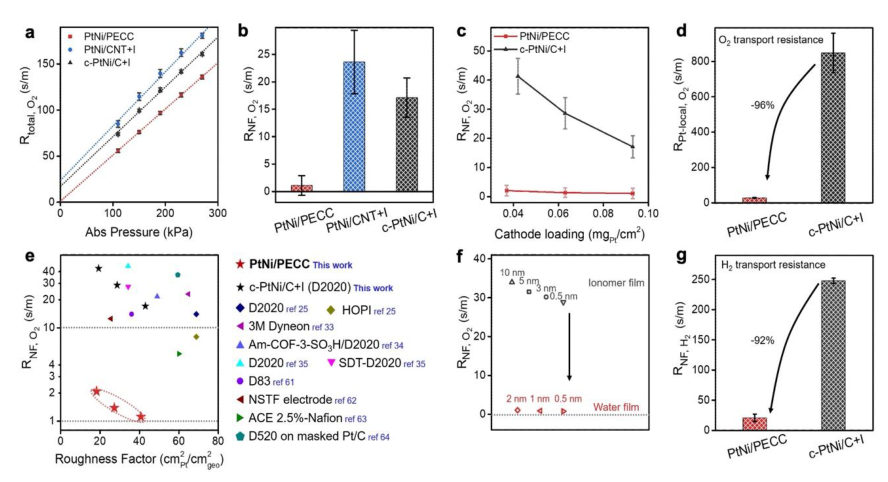
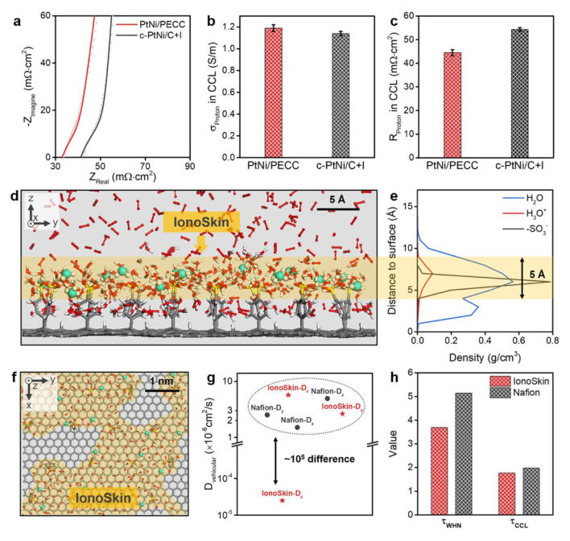
Summary. This paper introduces a new 'ionomer-free' catalyst architecture that integrates proton and electron transport within the catalyst itself. By eliminating the ionomer barrier, the design significantly improves oxygen access and power density in fuel cells. This approach offers a path toward much cheaper and more efficient electrochemical energy conversion devices.
Why it may be interesting. not directly relevant
Main problem. Conventional PEMFC catalyst layers suffer from a trade-off between ionic conductivity and reactant accessibility due to the ionomer layer blocking oxygen access to the catalyst surface.
Main result. The development of a proton-electron coupled catalyst (PECC) architecture enables an ionomer-free cathode, reducing oxygen transport resistance by 95% and boosting power density by up to 85% at low platinum loadings.
Method. The study combines experimental synthesis of PtNi-grafted CNTs, electrochemical testing (EIS, polarization curves, AST), and multi-scale modeling including 2D multi-physics MEA models and all-atom molecular dynamics simulations.
Model / system. The physical system is a proton-electron coupled catalyst (PECC) consisting of PtNi nanoparticles on chemically functionalized carbon nanotubes (IonoSkin) used in PEMFCs and electrochemical hydrogen pumps.
Key observables. Power density, mass activity, proton conductivity, oxygen transport resistance (Fickian and non-Fickian components), and platinum loading.
Important parameters / regimes. Platinum loading (0.037 to 0.090 mg/cm2), proton conductivity (S/m), hydration level (lambda ~ 14-15), and oxygen transport resistance.
Assumptions / limitations. The model assumes a 2D continuum for the MEA and uses the DREIDNG and F3C force fields for molecular dynamics simulations of the water-hydronium network.
Figures summary. Figures likely include TEM/STEM images of catalyst structure, XPS spectra for chemical verification, electrochemical polarization and power density curves, and MD-derived density profiles and diffusivity plots.
Paper structure. The paper introduces the PECC design, details the synthesis and characterization of the catalyst, presents electrochemical performance in PEMFCs and EHPs, provides a theoretical framework for transport resistance via multi-physics modeling, and uses MD simulations to explain the proton transport mechanism.
Efficient electrochemical energy devices are vital to renewable energy technology, yet coordinating the effective flow of electrons, ions, and chemical species continues to be a major challenge. In conventional proton-exchange membrane fuel cell (PEMFC) catalyst layers, proton and electron transport are supplied separately through percolating carbon networks and ionomer binders, rendering the catalyst largely passive and imposing fundamental trade-offs between reactant accessibility, ionic conductivity, and catalyst activity. Here, we introduce a one-dimensional proton-electron coupled catalyst (PECC) design, a transport-integrated electrocatalyst architecture in which the catalyst itself simultaneously supplies electronic and protonic transport to catalyst active sites. Using this PECC, PEMFCs can have an ionomer-free cathode catalyst layer (CCL), resulting in a dramatic 95% reduction in non-Fickian oxygen transport and boosting power density by 34% and 85% compared to traditional CCLs, with cathode Pt loadings of approximately 0.090 mg/cm^2 and 0.037 mg/cm^2, respectively. Meanwhile, PECC retains 65% of its mass activity and exhibits 32% higher power density than its ionomer-based CCL counterpart after 30k accelerated stressed test. Similar mass transport improvements have been observed in the electrochemical hydrogen pump (EHP) using PECC in the catalyst layers. Molecular dynamics simulations show the PECC's proton conductivity is 249% higher than Nafion. This PECC catalyst structure addresses core transport problems in PEMFCs, leading to almost 20% improvement in fuel efficiency and opens up new possibilities for designing high-performance, cost-effective electrochemical devices.
Authors: V. M. Fim, C. F. Schuch, L. R. de Faria, F. A. Santos, M. S. da Luz, S. S. Tsirkin, L. T. F. Eleno, A. J. S. Machado
Type: both · Category: strongly correlated electrons · PDF: https://arxiv.org/pdf/2605.25906v1
Analysis basis: full PDF text, analyzed in chunks
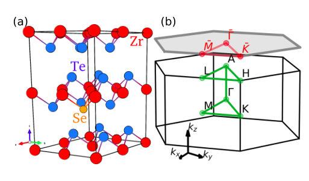
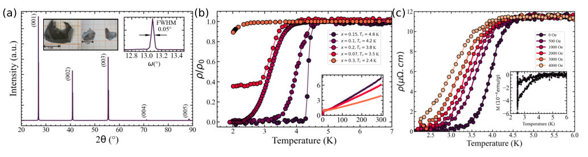
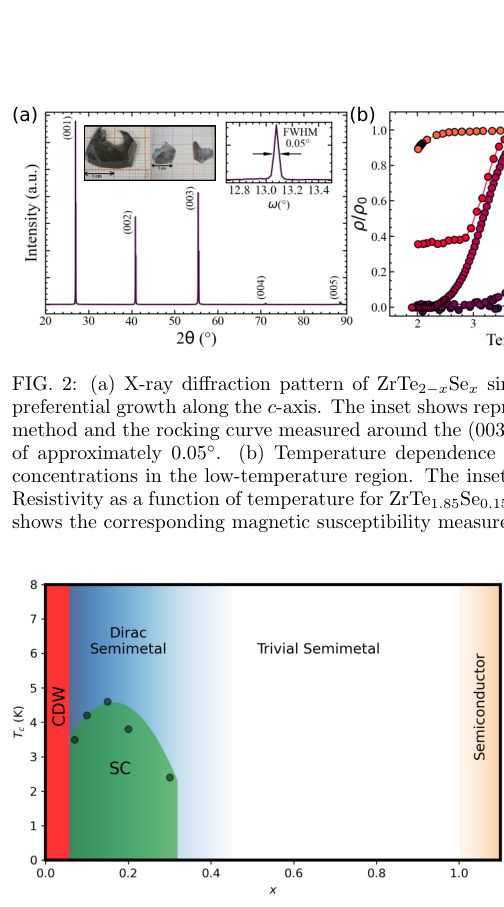
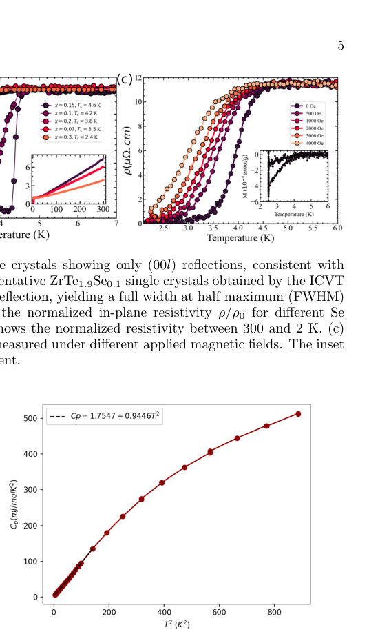
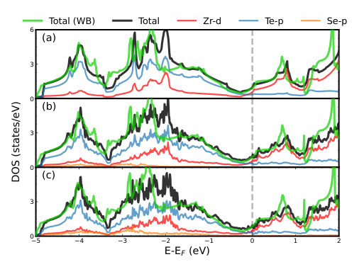
Summary. The study demonstrates that substituting Tellurium with Selenium in ZrTe2 creates a superconducting state that coexists with a Dirac semimetal phase. This discovery identifies ZrTe1.85Se0.15 as a promising platform for realizing topological superconductivity. The research provides a complete phase diagram mapping the transition from semimetal to semiconductor.
Why it may be interesting. not directly relevant
Main problem. Investigating the emergence of superconductivity in ZrTe2-xSex crystals via selenium substitution and exploring the coexistence of superconductivity with nontrivial electronic topology.
Main result. Selenium substitution induces a superconducting dome with a peak Tc of 4.8 K at x=0.15, where a Dirac semimetal phase and superconductivity coexist, making it a candidate for topological superconductivity.
Method. A combination of isothermal chemical vapor transport (ICVT) for crystal growth, transport and calorimetric measurements, and ab initio DFT calculations with Wannier interpolation and BdG Hamiltonian modeling.
Model / system. The physical system is the ZrTe2-xSex transition metal dichalcogenide series with a CdI2-type structure. The theoretical framework uses a Wannier-based tight-binding Hamiltonian and a Bogoliubov-de Gennes (BdG) Hamiltonian for slab modeling.
Key observables. Critical temperature (Tc), Sommerfeld constant (gamma), Debye temperature (Theta_D), electron-phonon coupling constant (lambda), Z2 topological invariant, and surface state dispersion.
Important parameters / regimes. Selenium concentration (x), chemical pressure, spin-orbit coupling (SOC), and the superconducting gap (Delta).
Assumptions / limitations. Superconductivity is assumed to be a conventional BCS-like s-wave pairing; supercell calculations neglected certain disorder effects; lattice parameters were interpolated linearly.
Figures summary. Fig 1 shows the substitution mechanism; Fig 4 shows specific heat fitting; Fig 5 shows the evolution of the density of states; Fig 12 displays the BdG spectrum, spin texture, and a topological phase diagram.
Paper structure. The paper introduces the substitution mechanism, details the experimental synthesis and characterization, presents the electronic and thermodynamic evolution via DFT and calorimetry, and concludes with a topological analysis of the superconducting phase.
This study explores the emergence of superconductivity in high-quality ZrTe$_{2-x}$Se$_x$ crystals, grown via the isothermal chemical vapor transport (ICVT) technique. Resistive, structural, and thermal measurements reveal that substituting Te with Se in the ZrTe$_2$ matrix induces a superconducting state at low temperatures. The critical temperature ($T_c$) exhibits a clear dependence on the selenium concentration, peaking at $x=0.15$ with a $T_c$ of $4.8$ K. Calorimetric data indicates that even a low Se substitution range is capable of modifying both the electronic contribution and the vibrational modes of the crystal lattice. Combined with ab initio calculations and Wannier Hamiltonian interpolation between ZrTe$_2$/ZrSe$_2$, we established an extensive phase diagram mapping the transition from charge density wave (CDW) to the state with coexistence between the Dirac semimetal and superconductivity (SC), up to the semiconductor phase. This coexistence suggests that ZrTe$_{1.85}$Se$_{0.15}$ could be a candidate platform for topological superconductivity, as it hosts a nontrivial $\mathbb Z_2$ invariant, with nonvanishing surface states in its $(001)$ planes.
Authors: L. M. Ishikura, C. F. Schuch, A. Faé Rabello, F. F. Nogueira, L. E. Corrêa, L. R. de Faria, J. Larrea Jiménez, L. T. F. Eleno, A. J. S. Machado
Type: both · Category: strongly correlated electrons · PDF: https://arxiv.org/pdf/2605.25898v1
Analysis basis: full PDF text, analyzed in chunks
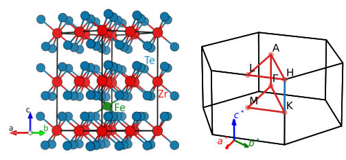
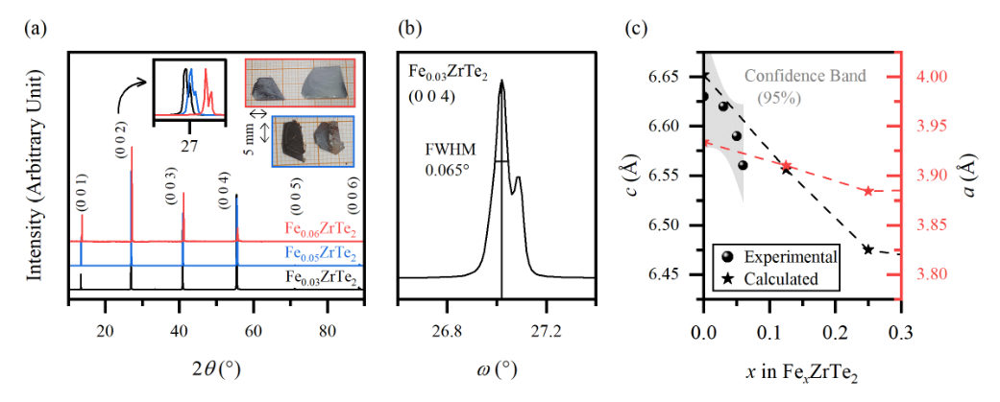
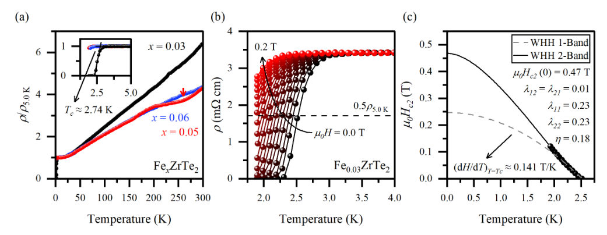
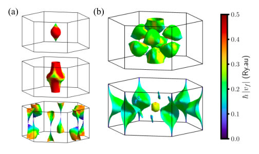
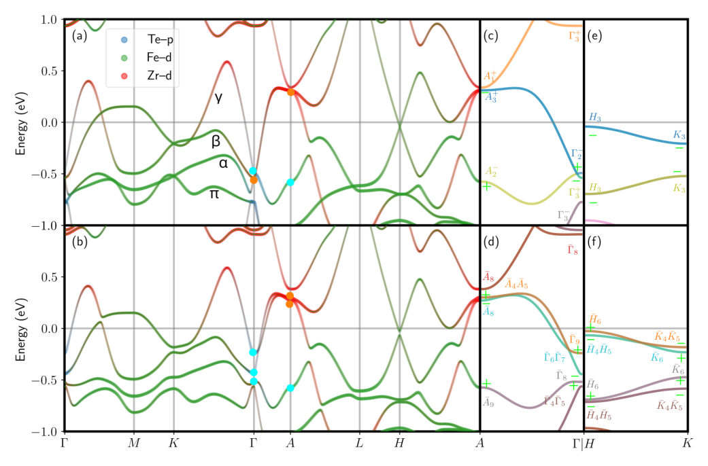
Summary. This paper demonstrates that intercalating iron into the semimetal ZrTe2 can trigger superconductivity by creating a van Hove singularity near the Fermi level. It also shows that this doping process suppresses the competing charge density wave state while maintaining the material's topological characteristics.
Why it may be interesting. not directly relevant
Main problem. The study investigates how Fe intercalation affects the electronic structure, superconductivity, and charge density wave (CDW) stability in the topological semimetal ZrTe2.
Main result. Fe doping induces superconductivity (Tc = 2.74 K) associated with a van Hove singularity near the Fermi level and destabilizes the CDW order, while preserving the enforced semimetal topology.
Method. The researchers combined experimental transport measurements (resistivity, magnetoresistance) and X-ray diffraction with ab initio DFT calculations using the Quantum ESPRESSO package and band unfolding techniques.
Model / system. The physical system is Fe-intercalated ZrTe2 (Fe_xZrTe2), a layered transition metal dichalcogen_2 where Fe atoms occupy octahedral sites in the van der Waals gap.
Key observables. Critical temperature (Tc), CDW transition temperature (T_CDW), upper critical field (Hc2), density of states (DOS), and lattice parameters.
Important parameters / regimes. Fe concentration (x = 0 to 0.25), Te-z coordinate, and connectivity value (phi).
Assumptions / limitations. DFT calculations used the PBE-GGA functional and neglected spin-orbit coupling in certain structural relaxation steps; supercells were used to model disordered doping.
Figures summary. Figure 5 shows band structures with and without SOC; Figure 6 displays unfolded band structures for various doped supercells; Figure 7 presents projected density of states; Figure 8 compares different lattice configurations.
Paper structure. The paper introduces the material system, details the experimental synthesis and characterization, presents the computational methodology, discusses the evolution of structural and electronic properties, and concludes with the interplay between superconductivity and CDW.
ZrTe$_2$ is an outstanding layered semimetal due to the topologically nontrivial electronic structure. In this work, we present an investigation of the electronic evolution of ZrTe$_2$ in the presence of Fe intercalation, namely Fe$_{x}$ZrTe$_2$ ($x= 0 - 0.25$), scrutinized by both experimental measurements and \textit{ab} initio calculations. While the first reveals a superconducting state with a maximum critical temperature $T_c = 2.74$ K ($x=$ 0.03), the latter indicates that the topological features of the pristine ZrTe$_2$ is sensitive to the distance between Te atoms and Zr layers. Also, the intercalation of Fe does not modify the non-trivial electronic band structure unlike the band crossings are now shifted slightly below $E_{F}$. In particular, a van Hove singularity near the Fermi level for a Fe content of $x=0.125$ is observed in the density of states, indicating that the superconducting order may be associated with features of the unfolded band structure and the concomitant enhancement of the density of states at $E_F$. Finally, our results reveal that the new compound with inclusion of Fe intercalation preserves the enforced semimetal classification.
Authors: Junjin Huang, Wenbo Sun, Longfu Li, Shuangyue Wang, Jingjun Qin, Rui Chen, Zaichen Xiang, Yucheng Li, Lingyong Zeng, Huixia Luo
Type: experiment · Category: disordered systems and neural networks · PDF: https://arxiv.org/pdf/2605.25048v1
Analysis basis: full PDF text, analyzed in chunks




Summary. This paper explores how adding Aluminum to high-entropy alloys influences their superconducting properties. It finds that Al-based alloys exhibit type-II superconductivity and that the addition of Al moves the superconducting transition behavior closer to that of crystalline metals rather than amorphous ones.
Why it may be interesting. not directly relevant
Main problem. Investigating how Aluminum (Al) doping affects the superconductivity, crystal structure, and valence electron count (VEC) in high-entropy alloys (HEAs).
Main result. The Al-based HEAs TaNbHfZrAl and TiHfNbTaAl are bulk type-II superconductors with Tc values of 5.5 K and 3.2 K, respectively, showing that Al incorporation shifts the Tc dependence toward a more crystalline-like behavior.
Method. Samples were prepared via arc-melting and characterized using X-ray diffraction, SEM, and EDX, while physical properties were measured using resistivity, magnetic susceptibility, and specific heat measurements via PPMS.
Model / system. The physical system consists of two Al-based high-entropy alloys, TaNbHfZrAl and TiHfNbTaAl, which possess a body-centered cubic (BCC) structure and serve as models for materials intermediate between crystalline and amorphous states due to high disorder.
Key observables. Critical temperature (Tc), upper critical field (mu0Hc2), magnetic susceptibility, specific heat jump, and critical current density (Jc).
Important parameters / regimes. Valence Electron Count (VEC) of 4.2, dirty-limit regime (xi0 < l), and atomic size difference parameter (delta).
Assumptions / limitations. The analysis assumes the alloys follow BCS theory for defining the Pauli-limit field and uses the Ginzburg-Landau equation for fitting critical fields.
Figures summary. Figure 1 shows Rietveld refinement and the BCC structure; Figure 2 shows temperature-dependent resistivity; Figure 5 illustrates the relationship between Tc and VEC compared to amorphous and crystalline trends.
Paper structure. The paper introduces the motivation of HEAs, details the synthesis and structural characterization, presents the superconducting property measurements (resistivity, magnetism, specific heat), analyzes the impact of Al on VEC and Tc, and concludes with the implications for the crystalline-amorphous boundary.
Since the first report of a high entropy alloy (HEA) superconductor in 2014, HEAs have continued to captivate the interest of superconducting researchers. Owing to the significant degree of disorder inherent in these systems, they serve as exemplary models for examining the properties of materials that exist in states intermediate between crystalline and amorphous structures. Here we present the superconductivity properties and crystal structure of TaNbHfZrAl and TiHfNbTaAl HEAs, which both have the VEC of 4.2 and body centered cubic (BCC) structure. Through resistivity, magnetic, and specific heat measurements, we prove that both samples are the bulk type-II superconductors with a critical temperature Tc of 5.5 K for TaNbHfZrAl and Tc of 3.2 K for TiHfNbTaAl. The Tc of HEA superconductors is influenced by the VEC and the element composition. And the incorporation of Al in high disorder HEA superconductors causes a more crystallinelike Tc dependence.
Authors: Nicolas Chamel
Type: theory · Category: other · PDF: https://arxiv.org/pdf/2605.25600v1
Analysis basis: full PDF text, analyzed in chunks
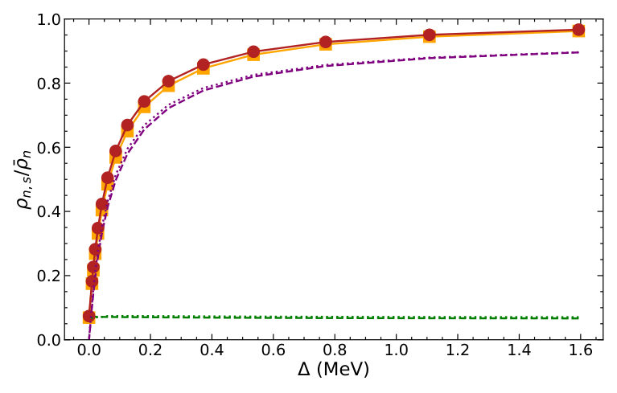
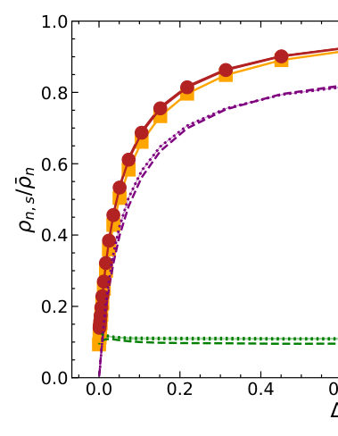
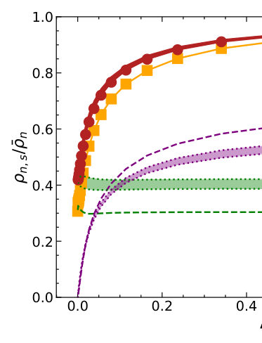
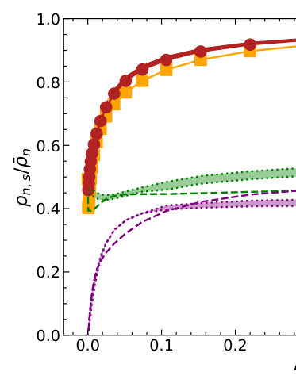
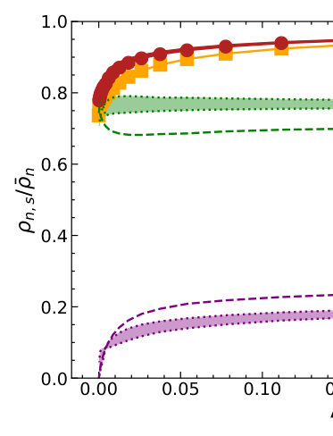
Summary. This paper demonstrates that neglecting the interband response leads to incorrect predictions of superfluidity in neutron star crusts. By including this response, the author shows that the neutron superfluid fraction is significantly enhanced and provides a consistent microscopic framework for entrainment effects across the crust and core.
Why it may be interesting. not directly relevant
Main problem. Investigating the role of interband response in determining the neutron superfluid fraction and the effective mass of ions in the crystalline crust of a neutron star.
Main result. The interband response enhances the neutron superfluid fraction, and the effective ion mass remains close to the mass of bound nucleons for realistic pairing gaps, providing a unified description of entrainment in the crust and core.
Method. Linear response theory within the self-consistent time-dependent Hartree-Fock-Bogoliubov (TDHFB) framework using Skyrme energy density functionals and the BCS approximation.
Model / system. The crystalline inner crust of a neutron star, modeled as a body-centered cubic (BCC) lattice of spherical clusters (ions) immersed in a neutron superfluid.
Key observables. Neutron superfluid fraction (rho_n,s/rho_n), effective ion mass (m_I), effective neutron mass (m_n), and neutron mass current.
Important parameters / regimes. Neutron pairing gap (Delta), baryon density (n_bar), Skyrme coupling coefficients, and the permeability parameter (lambda).
Assumptions / limitations. The crust is a perfect BCC crystal; the BCS approximation is used; spin-orbit coupling is neglected; and the superfluid flow is assumed to be stationary.
Figures summary. Figures show the neutron superfluid fraction and effective ion mass as functions of the pairing gap and baryon density, including the effects of lattice vibrations.
Paper structure. The paper introduces the problem of entrainment discrepancy, develops the TDHFB linear response formalism, performs 3D band-structure calculations, compares results with classical hydrodynamics, and discusses the impact of lattice vibrations and ion permeability.
Neutron superfluidity in the inner crust of a neutron star is further investigated, focusing on the role of the interband response in the superfluid fraction and the effective mass of crustal ions induced by their motion through the superfluid. Calculations are performed within the linear response theory of the self-consistent time-dependent Hartree-Fock-Bogoliubov equations with Skyrme nuclear energy density functionals in the Bardeen-Cooper-Schrieffer approximation. The absence of interband response in previous analyses is clarified. The neutron superfluid density is formally shown to be consistent with the entrainment matrix derived earlier in homogeneous neutron-proton superfluid mixture, thus providing a unified description of entrainment effects in the inner crust and outer core of a neutron star within the same microscopic framework. The relative importance of the intraband and interband responses in different regions of the crust is numerically assessed from three-dimensional band-structure calculations, taking into account quantum zero-point motion of ions about their equilibrium position. The neutron superfluid fraction is found to be enhanced by the interband response, resulting in effective ion masses that remain close to the mass of quantum mechanically bound nucleons for realistic neutron pairing gaps. Results are compared to predictions from classical hydrodynamics with different prescriptions for the permeability of ions to superfluidity.
Authors: R. Shaikhaidarov, R. Hussain, V. N. Antonov, E. Il'ichev
Type: experiment · Category: other · PDF: https://arxiv.org/pdf/2605.24522v1
Analysis basis: full PDF text, analyzed in chunks
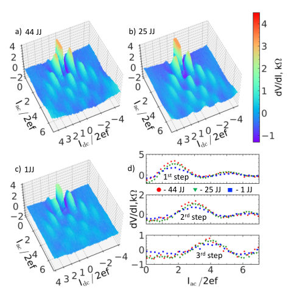
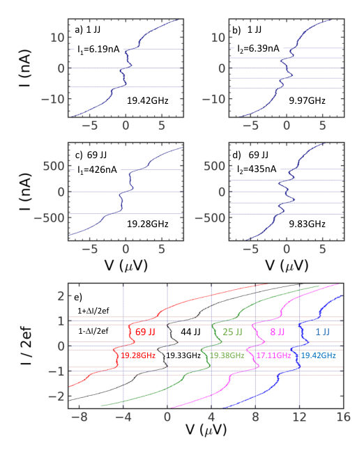
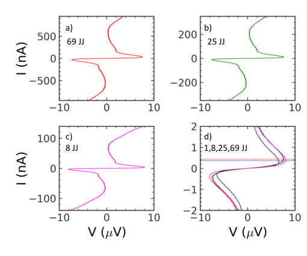
Summary. The researchers successfully synchronized 69 parallel Josephson Junctions to produce a larger quantized current of 426 nA. This demonstrates that the current amplitude can be scaled up for metrological purposes without degrading the precision of the quantization, providing a path toward a practical quantum current standard.
Why it may be interesting. not directly relevant
Main problem. The challenge of scaling current quantization from single Josephson Junctions to larger, usable amplitudes (mA and above) for a practical quantum current standard without degrading accuracy.
Main result. Demonstrated the synchronization of current quantization in an array of up to 69 parallel Josephson Junctions, achieving a quantized current of 426 nA without loss of accuracy or scaling degradation.
Method. Experimental measurement of voltage-current (I-V) characteristics and differential resistance maps (dV/dI) using a dilution refrigerator and microwave excitation on TiN-based Josephson Junction arrays.
Model / system. An array of parallel, weakly coupled Josephson Junctions operating in the regime of Coherent Quantum Phase Slip (CQPS), where the system follows a Bloch Hamiltonian and utilizes a screening circuit with superinductance.
Key observables. Voltage-current (I-V) characteristics, quantized current steps (I_dc,n), and differential resistance maps (dV/dI).
Important parameters / regimes. Microwave frequency f = 19.325 GHz, quantized current 426 nA, junction size ~50 x 40 nm^2, and thermal noise current Delta I_T ~ 0.4 nA.
Assumptions / limitations. The accuracy of the quantization is limited by thermal fluctuations in the screening circuit resistors, and the system operates in the regime where microwave frequency is much larger than the plasma frequency.
Figures summary. Figure 1 shows the JJ array photo, SEM image, and circuit diagram; Figure 3 displays differential resistance maps for different array sizes; Figure 4 shows normalized I-V curves for various array sizes.
Paper structure. The paper introduces the metrological need for current standards, describes the CQPS-based JJ array platform and fabrication, presents experimental results on synchronization and scaling, and concludes with an analysis of noise-induced accuracy limitations.
We demonstrate the synchronization of current quantization in a parallel array of weakly coupled Josephson Junctions operating in the regime of the coherent quantum phase slip. The first quantized current step on the voltage-current characteristic of 69 parallel Josephson junctions, under microwave excitation at a frequency of f = 19.325 GHz, is observed at 426 nA. Experiments show that accuracy of quantization does not degrade with increasing number of combined Josephson junctions. This demonstration addresses the issue of quantized current amplitude requirements adopted for a practical quantum standard, while leaving the question of accuracy for further research. At present, the quantum current standard of accepted metrological accuracy in the triangle of electrical units is under development. The other two, the Volt and Ohm standards based on the Josephson and Quantum Hall effects, respectively, are already well established in metrology.
Authors: Bo Liang, Xue Li, Congcong Le, Zirui Wu, Wenpei Zhu, Neng Cai, Yong-Chang Lau, Xianxin Wu, Jiayu Liu, Zhanfeng Liu, Hongen Zhu, Tongrui Li, Zhicheng Jiang, Yu Huang, Wenchuan Jing, Xun Ma, Qi Jiang, Hang Li, Zhihao Cai, Xuezhi Chen, Gexing Qu, Yiwei Cheng, Bing-Jie Chen, Zhengtai Liu, Dawei Shen, Mao Ye, Shengtao Cui, Zhe Sun, Koji Miyamoto, Taichi Okuda, Kenya Shimada, Yaobo Huang, Zhenhua Chen, Lin Zhao, Baojie Feng, Xinguo Ren, Wenhong Wang, Xingjiang Zhou, Guodong Liu
Type: both · Category: strongly correlated electrons · PDF: https://arxiv.org/pdf/2605.24415v1
Analysis basis: full PDF text, analyzed in chunks
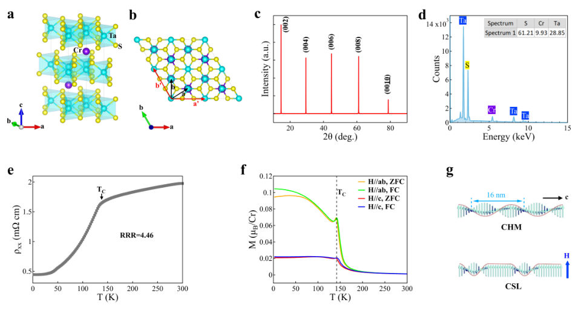
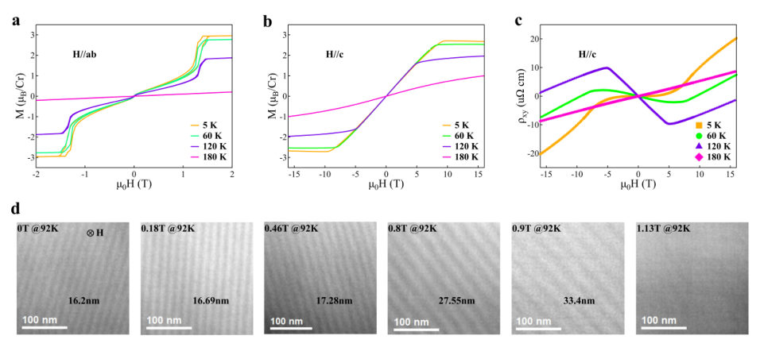
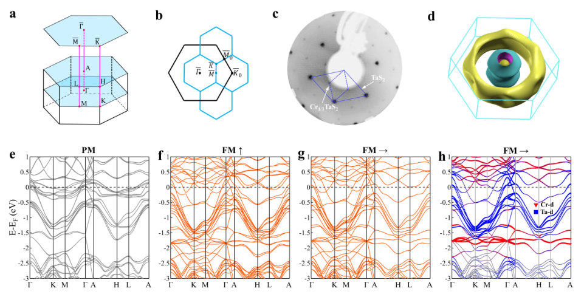
Summary. This paper provides the first systematic investigation of how surface termination affects the electronic and magnetic properties of the chiral helimagnet Cr1/3TaS2. By using micro-ARPES, the authors show that the Cr-terminated surface provides a direct spectroscopic fingerprint of the chiral magnetic order through temperature-dependent band splitting. These findings are crucial for designing future chiral spintronic and valleytronic devices.
Why it may be interesting. not directly relevant
Main problem. The study aims to resolve the lack of microscopic understanding regarding how surface termination and temperature-driven magnetic evolution affect the electronic structures in the chiral helimagnet Cr1/3TaS2.
Main result. The researchers discovered that the Cr-terminated surface exhibits pronounced magnetic band splitting that tracks the chiral helimagnetic order parameter, while the TaS2-terminated surface shows different electronic features like a triangular electron pocket.
Method. The study combines high-resolution micro-focused ARPES with surface-state-resolved first-principles DFT calculations and various magnetic characterization techniques like Lorentz-TEM and magnetometry.
Model / system. The physical system is Cr1/3TaS2, a chiral helimagnet based on intercalated transition-metal dichalcogenides featuring a sqrt3xsqrt3 superlattice and nano-scale spin textures.
Key observables. Surface electronic states, magnetic band splitting, temperature-dependent magnetization (M-T), and Cr-d-derived surface flat bands.
Important parameters / regimes. Magnetic transition temperature (TC ~ 142 K), surface termination (TaS2 vs Cr), and in-plane magnetic field strength.
Assumptions / limitations. The theoretical modeling uses an effective ferromagnetic approximation rather than the full chiral helimagnetic state due to supercell size constraints.
Figures summary. Figure 1 shows crystal structure and magnetic properties; Figure 2 shows field-dependent magnetization and Lorentz-TEM images; Figure 3 shows Brillouin zone and calculated band structures; Figures 6 and 7 demonstrate the temperature evolution of electronic bands and magnetic splitting on different surface terminations.
Paper structure. The paper begins with structural and magnetic characterization, moves to the investigation of bulk and surface electronic structures using ARPES and DFT, explores the temperature-dependent evolution of these states across the magnetic transition, and concludes with the implications for spintronic applications.
Chiral helimagnets based on intercalated transition-metal dichalcogenides, characterized by nano-scale spin ordering, provide a powerful route to engineer chiral spin textures (e.g. the topologically protected magnetic solitons) and emergent electronic functionality at reduced dimensions, where surface and interface states often dominate device operation. However, despite growing interest, direct experimental studies of termination-dependent surface electronic structures and their temperature-driven magnetic evolution remain largely unexplored, hindering a microscopic understanding of the electronic states that is crucial for the development of low-dimensional spintronic devices. Here, for the first time, taking Cr1/3TaS2 as a representative example, we systematically investigate the termination-dependent surface electronic states of the chiral helimagnets and uncover their distinct temperature evolution across the magnetic transition (TC~142K) by combining high-resolution ARPES with a micro-focused beam and surface-state-resolved first-principles calculations. The TaS2-terminated surface hosts folded monolayer-like TaS2 bands under the $\sqrt3\times\sqrt3$ superlattice potential and a shallow triangular electron pocket at the superlattice $\bar K$ point arising from Cr-Ta orbital hybridization. In contrast, the Cr-terminated surface exhibits reconstructed hole pockets with pronounced magnetic band splitting. This splitting disappears above TC and closely follows the chiral helimagnetic order parameter, providing a direct spectroscopic fingerprint of chiral helimagnetic order. In addition, multiple ultranarrow Cr-d-derived surface flat bands are resolved. These findings establish Cr1/3TaS2 as a model system in which surface electronic states are strongly coupled to chiral magnetism, opening new opportunities for chiral spintronic and valleytronic micro/nanodevices.
Authors: Flor B. Quiroga, Isaías Rodríguez, David Hinojosa, Alexander Valladares, Renela M. Valladares, Ariel A. Valladares
Type: theory · Category: disordered systems and neural networks · PDF: https://arxiv.org/pdf/2605.24234v1
Analysis basis: full PDF text, analyzed in chunks
Summary. This paper uses ab initio molecular dynamics and reverse Monte Carlo simulations to resolve a debate regarding the structural features of liquid bismuth. It identifies that the characteristic 'shoulder' in the pair distribution function is a real physical feature arising from deformed triangular and square atomic arrangements. The study provides a highly detailed geometric map of the liquid phase at 573 K.
Why it may be interesting. not directly relevant
Main problem. The study investigates the precise atomic structure of liquid bismuth at 573 K, specifically addressing whether the observed 'shoulder' in the Pair Distribution Function (PDF) is a physical structural feature or an experimental artifact.
Main result. The researchers conclude that the shoulder is a real physical property caused by the presence of deformed triangular and square atomic motifs. They also demonstrate that the liquid structure is statistically stable and that RMC-generated structures accurately represent the MD-simulated liquid.
Method. Ab initio Molecular Dynamics (MD) using Density Functional Theory (DFT) with the LDA-VWN functional, combined with Reverse Monte Carlo (RMC) simulations to generate representative atomic supercells.
Model / system. The physical system is liquid bismuth (Bi) at 573 K, modeled using supercells of 216 atoms transitioning from a crystalline Wyckoff structure to a metallic liquid state.
Key observables. Pair Distribution Functions (PDFs), Plane Angle Distributions (PADs), and Radial Distribution Functions (J(r)).
Important parameters / regimes. Temperature of 573 K, 216-atom supercells, LDA-VWN exchange-correlation functional, and a bond length threshold of 4.185 A.
Assumptions / limitations. The use of the LDA-VWN functional and semi-core pseudopotentials as an approximation for the electronic structure; the assumption that the averaged MD steps represent a stable liquid state.
Figures summary. Figure 1 compares Bi crystal patterns to geometric reliefs; Figure 2 shows the Bi phase diagram; Figure 3 shows energy stability; Figure 4 shows PDF convergence; Figure 5 compares MS and RMC PDFs; Figure 6 compares results to experimental data; Figures 7 and 8 show convergence of J(r) and PDFs; Figure 9 shows PAD peaks.
Paper structure. The paper introduces the structural problem of liquid Bi, describes the MD and RMC methodology, presents the convergence of the liquid state, analyzes the PDF and PAD features to identify geometric motifs, and concludes by comparing findings with experimental literature.
Molecular Dynamics (MD) is performed on supercells of 216 atoms of bismuth, going from 300 K to 573 K in 100 steps and maintaining it in the liquid state, at 573 K, during 500 steps using the Materials Studio (MS) suite of codes. The Pair Distribution Functions (PDFs) and the Plane Angle Distributions (PADs) of the last 1, 10, 25 and 100 steps of the MD have been obtained. Averaging the last 100 steps, as representative of the liquid, Reverse Monte Carlo (RMC) was applied to obtain 4 atomic structures, one for each set of initial random velocities. Then, a detailed structural study of liquid bismuth at 573 K was undertaken; PDFs and PADs are calculated and reported. Two noticeable peaks appear for the PDFs, at 3.25 and 6.55 Å, along with a pseudo peak (shoulder) at 4.6 Å. This shoulder (after the first peak) of the PDFs is found to be related to the third and fourth neighbor peaks of the crystalline Wyckoff structure and also to the diagonal distances in deformed squares in the liquid structure. For completeness J(r)s are also reported. Two prominent peaks in the MS PADs are observed: 53° and 85°; and two for the RMC PADs: 58° and 90°, suggesting the existence of deformed triangles and squares. Less abundant are higher-order geometrical structures.